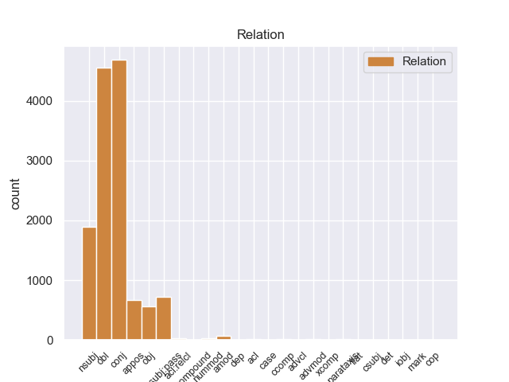
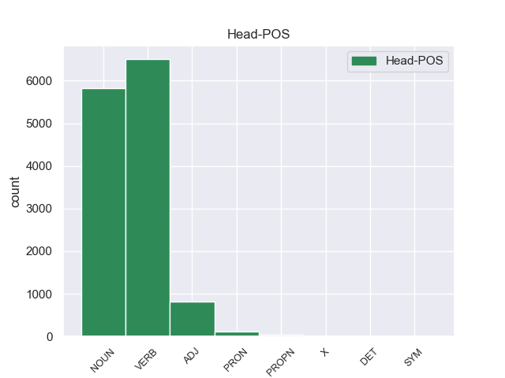
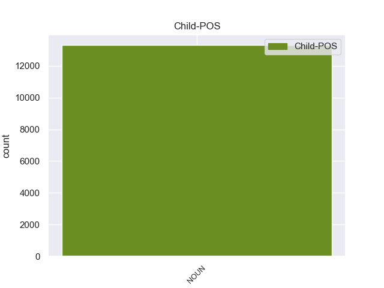

Distribution of features within this leaf



Agreement Rules sorted by frequency.
- When the dependent token is the conjunct(conj) of the head token, and the dependent token is NOUN.
1 Esta _ _ _ _ 0 _ _ _
2 teoría _ _ _ _ 0 _ _ _
3 se _ _ _ _ 0 _ _ _
4 avenía _ _ _ _ 0 _ _ _
5 bien _ _ _ _ 0 _ _ _
6 con _ _ _ _ 0 _ _ _
7 la _ _ _ _ 0 _ _ _
8 creencia _ _ _ _ 0 _ _ _
9 de _ _ _ _ 0 _ _ _
10 el _ _ _ _ 0 _ _ _
11 Romanticismo _ _ _ _ 0 _ _ _
12 en _ _ _ _ 0 _ _ _
13 un _ _ _ _ 0 _ _ _
14 volkgeist _ _ _ _ 0 _ _ _
15 , _ _ _ _ 0 _ _ _
16 " _ _ _ _ 0 _ _ _
17 genio genio NOUN _ Gender=Masc|Number=Sing 0 _ _ _
18 o _ _ _ _ 0 _ _ _
19 espíritu espíritu NOUN _ Gender=Masc|Number=Sing 17 conj _ _
20 de _ _ _ _ 0 _ _ _
21 el _ _ _ _ 0 _ _ _
22 pueblo _ _ _ _ 0 _ _ _
23 " _ _ _ _ 0 _ _ _
24 , _ _ _ _ 0 _ _ _
25 autor _ _ _ _ 0 _ _ _
26 colectivo _ _ _ _ 0 _ _ _
27 y _ _ _ _ 0 _ _ _
28 anónimo _ _ _ _ 0 _ _ _
29 de _ _ _ _ 0 _ _ _
30 una _ _ _ _ 0 _ _ _
31 poesía _ _ _ _ 0 _ _ _
32 nacional _ _ _ _ 0 _ _ _
33 . _ _ _ _ 0 _ _ _
1 En _ _ _ _ 0 _ _ _
2 1991 _ _ _ _ 0 _ _ _
3 , _ _ _ _ 0 _ _ _
4 como _ _ _ _ 0 _ _ _
5 ya _ _ _ _ 0 _ _ _
6 está _ _ _ _ 0 _ _ _
7 indicado indicar VERB _ Gender=Masc|Number=Sing|Tense=Past|VerbForm=Part 0 _ _ _
8 en _ _ _ _ 0 _ _ _
9 el _ _ _ _ 0 _ _ _
10 párrafo párrafo NOUN _ Gender=Masc|Number=Sing 7 obl _ _
11 anterior _ _ _ _ 0 _ _ _
12 , _ _ _ _ 0 _ _ _
13 se _ _ _ _ 0 _ _ _
14 creó _ _ _ _ 0 _ _ _
15 un _ _ _ _ 0 _ _ _
16 equipo _ _ _ _ 0 _ _ _
17 ad _ _ _ _ 0 _ _ _
18 hoc _ _ _ _ 0 _ _ _
19 para _ _ _ _ 0 _ _ _
20 averiguar _ _ _ _ 0 _ _ _
21 como _ _ _ _ 0 _ _ _
22 se _ _ _ _ 0 _ _ _
23 podía _ _ _ _ 0 _ _ _
24 desarrollar _ _ _ _ 0 _ _ _
25 el _ _ _ _ 0 _ _ _
26 Dialogo _ _ _ _ 0 _ _ _
27 Social _ _ _ _ 0 _ _ _
28 , _ _ _ _ 0 _ _ _
29 este _ _ _ _ 0 _ _ _
30 equipo _ _ _ _ 0 _ _ _
31 estaba _ _ _ _ 0 _ _ _
32 formado _ _ _ _ 0 _ _ _
33 por _ _ _ _ 0 _ _ _
34 representantes _ _ _ _ 0 _ _ _
35 de _ _ _ _ 0 _ _ _
36 todas _ _ _ _ 0 _ _ _
37 las _ _ _ _ 0 _ _ _
38 organizaciones _ _ _ _ 0 _ _ _
39 relacionadas _ _ _ _ 0 _ _ _
40 con _ _ _ _ 0 _ _ _
41 CES _ _ _ _ 0 _ _ _
42 , _ _ _ _ 0 _ _ _
43 UNICE _ _ _ _ 0 _ _ _
44 y _ _ _ _ 0 _ _ _
45 CEEP _ _ _ _ 0 _ _ _
46 ; _ _ _ _ 0 _ _ _
1 " _ _ _ _ 0 _ _ _
2 Tenemos _ _ _ _ 0 _ _ _
3 todo _ _ _ _ 0 _ _ _
4 listo _ _ _ _ 0 _ _ _
5 , _ _ _ _ 0 _ _ _
6 la _ _ _ _ 0 _ _ _
7 venta _ _ _ _ 0 _ _ _
8 de _ _ _ _ 0 _ _ _
9 boletos _ _ _ _ 0 _ _ _
10 será _ _ _ _ 0 _ _ _
11 a _ _ _ _ 0 _ _ _
12 partir _ _ _ _ 0 _ _ _
13 de _ _ _ _ 0 _ _ _
14 mañana _ _ _ _ 0 _ _ _
15 de _ _ _ _ 0 _ _ _
16 8 _ _ _ _ 0 _ _ _
17 am _ _ _ _ 0 _ _ _
18 a _ _ _ _ 0 _ _ _
19 3 _ _ _ _ 0 _ _ _
20 pm _ _ _ _ 0 _ _ _
21 , _ _ _ _ 0 _ _ _
22 la _ _ _ _ 0 _ _ _
23 afición _ _ _ _ 0 _ _ _
24 de _ _ _ _ 0 _ _ _
25 el _ _ _ _ 0 _ _ _
26 Real _ _ _ _ 0 _ _ _
27 España _ _ _ _ 0 _ _ _
28 podrá _ _ _ _ 0 _ _ _
29 comprar _ _ _ _ 0 _ _ _
30 en _ _ _ _ 0 _ _ _
31 el _ _ _ _ 0 _ _ _
32 Banco _ _ _ _ 0 _ _ _
33 Continental _ _ _ _ 0 _ _ _
34 , _ _ _ _ 0 _ _ _
35 frente _ _ _ _ 0 _ _ _
36 a _ _ _ _ 0 _ _ _
37 el _ _ _ _ 0 _ _ _
38 estadio _ _ _ _ 0 _ _ _
39 Morazán _ _ _ _ 0 _ _ _
40 , _ _ _ _ 0 _ _ _
41 se _ _ _ _ 0 _ _ _
42 han _ _ _ _ 0 _ _ _
43 puesto _ _ _ _ 0 _ _ _
44 a _ _ _ _ 0 _ _ _
45 la _ _ _ _ 0 _ _ _
46 venta _ _ _ _ 0 _ _ _
47 800 _ _ _ _ 0 _ _ _
48 boletos _ _ _ _ 0 _ _ _
49 , _ _ _ _ 0 _ _ _
50 500 _ _ _ _ 0 _ _ _
51 en _ _ _ _ 0 _ _ _
52 sol _ _ _ _ 0 _ _ _
53 y _ _ _ _ 0 _ _ _
54 300 _ _ _ _ 0 _ _ _
55 en _ _ _ _ 0 _ _ _
56 preferencia _ _ _ _ 0 _ _ _
57 , _ _ _ _ 0 _ _ _
58 la _ _ _ _ 0 _ _ _
59 boletería boletería NOUN _ Gender=Fem|Number=Sing 65 nsubj _ _
60 de _ _ _ _ 0 _ _ _
61 el _ _ _ _ 0 _ _ _
62 España _ _ _ _ 0 _ _ _
63 está _ _ _ _ 0 _ _ _
64 ya _ _ _ _ 0 _ _ _
65 identificada identificar VERB _ Gender=Fem|Number=Sing|VerbForm=Part 0 _ _ _
66 con _ _ _ _ 0 _ _ _
67 el _ _ _ _ 0 _ _ _
68 escudo _ _ _ _ 0 _ _ _
69 de _ _ _ _ 0 _ _ _
70 el _ _ _ _ 0 _ _ _
71 equipo _ _ _ _ 0 _ _ _
72 y _ _ _ _ 0 _ _ _
73 con _ _ _ _ 0 _ _ _
74 el _ _ _ _ 0 _ _ _
75 color _ _ _ _ 0 _ _ _
76 amarillo _ _ _ _ 0 _ _ _
77 " _ _ _ _ 0 _ _ _
78 , _ _ _ _ 0 _ _ _
79 comentó _ _ _ _ 0 _ _ _
80 Rolin _ _ _ _ 0 _ _ _
81 . _ _ _ _ 0 _ _ _
1 En _ _ _ _ 0 _ _ _
2 1991 _ _ _ _ 0 _ _ _
3 , _ _ _ _ 0 _ _ _
4 como _ _ _ _ 0 _ _ _
5 ya _ _ _ _ 0 _ _ _
6 está _ _ _ _ 0 _ _ _
7 indicado _ _ _ _ 0 _ _ _
8 en _ _ _ _ 0 _ _ _
9 el _ _ _ _ 0 _ _ _
10 párrafo _ _ _ _ 0 _ _ _
11 anterior _ _ _ _ 0 _ _ _
12 , _ _ _ _ 0 _ _ _
13 se _ _ _ _ 0 _ _ _
14 creó _ _ _ _ 0 _ _ _
15 un _ _ _ _ 0 _ _ _
16 equipo _ _ _ _ 0 _ _ _
17 ad _ _ _ _ 0 _ _ _
18 hoc _ _ _ _ 0 _ _ _
19 para _ _ _ _ 0 _ _ _
20 averiguar _ _ _ _ 0 _ _ _
21 como _ _ _ _ 0 _ _ _
22 se _ _ _ _ 0 _ _ _
23 podía _ _ _ _ 0 _ _ _
24 desarrollar _ _ _ _ 0 _ _ _
25 el _ _ _ _ 0 _ _ _
26 Dialogo _ _ _ _ 0 _ _ _
27 Social _ _ _ _ 0 _ _ _
28 , _ _ _ _ 0 _ _ _
29 este _ _ _ _ 0 _ _ _
30 equipo equipo NOUN _ Gender=Masc|Number=Sing 32 nsubj:pass _ _
31 estaba _ _ _ _ 0 _ _ _
32 formado formar VERB _ Gender=Masc|Number=Sing|VerbForm=Part 0 _ _ _
33 por _ _ _ _ 0 _ _ _
34 representantes _ _ _ _ 0 _ _ _
35 de _ _ _ _ 0 _ _ _
36 todas _ _ _ _ 0 _ _ _
37 las _ _ _ _ 0 _ _ _
38 organizaciones _ _ _ _ 0 _ _ _
39 relacionadas _ _ _ _ 0 _ _ _
40 con _ _ _ _ 0 _ _ _
41 CES _ _ _ _ 0 _ _ _
42 , _ _ _ _ 0 _ _ _
43 UNICE _ _ _ _ 0 _ _ _
44 y _ _ _ _ 0 _ _ _
45 CEEP _ _ _ _ 0 _ _ _
46 ; _ _ _ _ 0 _ _ _
1 Esta _ _ _ _ 0 _ _ _
2 teoría _ _ _ _ 0 _ _ _
3 se _ _ _ _ 0 _ _ _
4 avenía _ _ _ _ 0 _ _ _
5 bien _ _ _ _ 0 _ _ _
6 con _ _ _ _ 0 _ _ _
7 la _ _ _ _ 0 _ _ _
8 creencia _ _ _ _ 0 _ _ _
9 de _ _ _ _ 0 _ _ _
10 el _ _ _ _ 0 _ _ _
11 Romanticismo _ _ _ _ 0 _ _ _
12 en _ _ _ _ 0 _ _ _
13 un _ _ _ _ 0 _ _ _
14 volkgeist volkgeist NOUN _ Gender=Masc|Number=Sing 0 _ _ _
15 , _ _ _ _ 0 _ _ _
16 " _ _ _ _ 0 _ _ _
17 genio _ _ _ _ 0 _ _ _
18 o _ _ _ _ 0 _ _ _
19 espíritu _ _ _ _ 0 _ _ _
20 de _ _ _ _ 0 _ _ _
21 el _ _ _ _ 0 _ _ _
22 pueblo _ _ _ _ 0 _ _ _
23 " _ _ _ _ 0 _ _ _
24 , _ _ _ _ 0 _ _ _
25 autor autor NOUN _ Gender=Masc|Number=Sing 14 appos _ _
26 colectivo _ _ _ _ 0 _ _ _
27 y _ _ _ _ 0 _ _ _
28 anónimo _ _ _ _ 0 _ _ _
29 de _ _ _ _ 0 _ _ _
30 una _ _ _ _ 0 _ _ _
31 poesía _ _ _ _ 0 _ _ _
32 nacional _ _ _ _ 0 _ _ _
33 . _ _ _ _ 0 _ _ _
1 Mientras _ _ _ _ 0 _ _ _
2 tanto _ _ _ _ 0 _ _ _
3 , _ _ _ _ 0 _ _ _
4 los _ _ _ _ 0 _ _ _
5 Los _ _ _ _ 0 _ _ _
6 Angeles _ _ _ _ 0 _ _ _
7 Lakers _ _ _ _ 0 _ _ _
8 , _ _ _ _ 0 _ _ _
9 que _ _ _ _ 0 _ _ _
10 habían _ _ _ _ 0 _ _ _
11 elegido _ _ _ _ 0 _ _ _
12 a _ _ _ _ 0 _ _ _
13 el _ _ _ _ 0 _ _ _
14 jugador _ _ _ _ 0 _ _ _
15 en _ _ _ _ 0 _ _ _
16 en _ _ _ _ 0 _ _ _
17 la _ _ _ _ 0 _ _ _
18 trigésimo _ _ _ _ 0 _ _ _
19 primera _ _ _ _ 0 _ _ _
20 posición _ _ _ _ 0 _ _ _
21 de _ _ _ _ 0 _ _ _
22 el _ _ _ _ 0 _ _ _
23 Draft _ _ _ _ 0 _ _ _
24 de _ _ _ _ 0 _ _ _
25 la _ _ _ _ 0 _ _ _
26 NBA _ _ _ _ 0 _ _ _
27 de _ _ _ _ 0 _ _ _
28 1973 _ _ _ _ 0 _ _ _
29 , _ _ _ _ 0 _ _ _
30 habían _ _ _ _ 0 _ _ _
31 traspasado traspasar VERB _ Gender=Masc|Number=Sing|Tense=Past|VerbForm=Part 0 _ _ _
32 sus _ _ _ _ 0 _ _ _
33 derechos derecho NOUN _ Gender=Masc|Number=Plur 31 obj _ _
34 a _ _ _ _ 0 _ _ _
35 Cleveland _ _ _ _ 0 _ _ _
36 Cavaliers _ _ _ _ 0 _ _ _
37 a _ _ _ _ 0 _ _ _
38 cambio _ _ _ _ 0 _ _ _
39 de _ _ _ _ 0 _ _ _
40 una _ _ _ _ 0 _ _ _
41 futura _ _ _ _ 0 _ _ _
42 primera _ _ _ _ 0 _ _ _
43 ronda _ _ _ _ 0 _ _ _
44 de _ _ _ _ 0 _ _ _
45 el _ _ _ _ 0 _ _ _
46 draft _ _ _ _ 0 _ _ _
47 . _ _ _ _ 0 _ _ _
1 La _ _ _ _ 0 _ _ _
2 presentación _ _ _ _ 0 _ _ _
3 de _ _ _ _ 0 _ _ _
4 el _ _ _ _ 0 _ _ _
5 nuevo _ _ _ _ 0 _ _ _
6 zar _ _ _ _ 0 _ _ _
7 no _ _ _ _ 0 _ _ _
8 puede _ _ _ _ 0 _ _ _
9 ser _ _ _ _ 0 _ _ _
10 más _ _ _ _ 0 _ _ _
11 humilde _ _ _ _ 0 _ _ _
12 y _ _ _ _ 0 _ _ _
13 contenida _ _ _ _ 0 _ _ _
14 , _ _ _ _ 0 _ _ _
15 y _ _ _ _ 0 _ _ _
16 este _ _ _ _ 0 _ _ _
17 comienza _ _ _ _ 0 _ _ _
18 expresando _ _ _ _ 0 _ _ _
19 sus _ _ _ _ 0 _ _ _
20 temores temore NOUN _ Gender=Masc|Number=Plur 23 amod _ _
21 y _ _ _ _ 0 _ _ _
22 sombríos _ _ _ _ 0 _ _ _
23 presentimientos presentimiento NOUN _ Gender=Masc|Number=Plur 0 _ _ _
24 , _ _ _ _ 0 _ _ _
25 para _ _ _ _ 0 _ _ _
26 continuar _ _ _ _ 0 _ _ _
27 con _ _ _ _ 0 _ _ _
28 una _ _ _ _ 0 _ _ _
29 plegaria _ _ _ _ 0 _ _ _
30 . _ _ _ _ 0 _ _ _
1 El _ _ _ _ 0 _ _ _
2 representante _ _ _ _ 0 _ _ _
3 de _ _ _ _ 0 _ _ _
4 el _ _ _ _ 0 _ _ _
5 Frente _ _ _ _ 0 _ _ _
6 Cívico _ _ _ _ 0 _ _ _
7 en _ _ _ _ 0 _ _ _
8 Tribunal _ _ _ _ 0 _ _ _
9 de _ _ _ _ 0 _ _ _
10 Cuentas _ _ _ _ 0 _ _ _
11 de _ _ _ _ 0 _ _ _
12 la _ _ _ _ 0 _ _ _
13 provincia _ _ _ _ 0 _ _ _
14 de _ _ _ _ 0 _ _ _
15 Córdoba _ _ _ _ 0 _ _ _
16 , _ _ _ _ 0 _ _ _
17 José _ _ _ _ 0 _ _ _
18 Medina _ _ _ _ 0 _ _ _
19 , _ _ _ _ 0 _ _ _
20 denunció _ _ _ _ 0 _ _ _
21 que _ _ _ _ 0 _ _ _
22 el _ _ _ _ 0 _ _ _
23 gobierno _ _ _ _ 0 _ _ _
24 de _ _ _ _ 0 _ _ _
25 Schiaretti _ _ _ _ 0 _ _ _
26 pidió _ _ _ _ 0 _ _ _
27 autorización _ _ _ _ 0 _ _ _
28 para _ _ _ _ 0 _ _ _
29 realizar _ _ _ _ 0 _ _ _
30 reparaciones _ _ _ _ 0 _ _ _
31 en _ _ _ _ 0 _ _ _
32 la _ _ _ _ 0 _ _ _
33 Casa _ _ _ _ 0 _ _ _
34 de _ _ _ _ 0 _ _ _
35 las _ _ _ _ 0 _ _ _
36 Tejas _ _ _ _ 0 _ _ _
37 por _ _ _ _ 0 _ _ _
38 más _ _ _ _ 0 _ _ _
39 de _ _ _ _ 0 _ _ _
40 un _ _ _ _ 0 _ _ _
41 millón millón NOUN _ Gender=Masc|Number=Sing 43 nummod _ _
42 de _ _ _ _ 0 _ _ _
43 pesos peso NOUN _ Gender=Masc|Number=Plur 0 _ _ _
44 el _ _ _ _ 0 _ _ _
45 pasado _ _ _ _ 0 _ _ _
46 19 _ _ _ _ 0 _ _ _
47 de _ _ _ _ 0 _ _ _
48 octubre _ _ _ _ 0 _ _ _
49 , _ _ _ _ 0 _ _ _
50 cuando _ _ _ _ 0 _ _ _
51 ya _ _ _ _ 0 _ _ _
52 estaba _ _ _ _ 0 _ _ _
53 la _ _ _ _ 0 _ _ _
54 decisión _ _ _ _ 0 _ _ _
55 de _ _ _ _ 0 _ _ _
56 demoler _ _ _ _ 0 _ _ _
57 el _ _ _ _ 0 _ _ _
58 edificio _ _ _ _ 0 _ _ _
59 . _ _ _ _ 0 _ _ _
1 Esto _ _ _ _ 0 _ _ _
2 produce _ _ _ _ 0 _ _ _
3 una _ _ _ _ 0 _ _ _
4 distorsión distorsión NOUN _ Gender=Fem|Number=Sing 0 _ _ _
5 que _ _ _ _ 0 _ _ _
6 es _ _ _ _ 0 _ _ _
7 consecuencia consecuencia NOUN _ Gender=Fem|Number=Sing 4 acl:relcl _ _
8 de _ _ _ _ 0 _ _ _
9 una _ _ _ _ 0 _ _ _
10 razón _ _ _ _ 0 _ _ _
11 instrumental _ _ _ _ 0 _ _ _
12 , _ _ _ _ 0 _ _ _
13 como _ _ _ _ 0 _ _ _
14 conocimiento _ _ _ _ 0 _ _ _
15 interesado _ _ _ _ 0 _ _ _
16 , _ _ _ _ 0 _ _ _
17 y _ _ _ _ 0 _ _ _
18 que _ _ _ _ 0 _ _ _
19 es _ _ _ _ 0 _ _ _
20 la _ _ _ _ 0 _ _ _
21 responsable _ _ _ _ 0 _ _ _
22 de _ _ _ _ 0 _ _ _
23 la _ _ _ _ 0 _ _ _
24 ciencia _ _ _ _ 0 _ _ _
25 y _ _ _ _ 0 _ _ _
26 la _ _ _ _ 0 _ _ _
27 tecnología _ _ _ _ 0 _ _ _
28 falsas _ _ _ _ 0 _ _ _
29 como _ _ _ _ 0 _ _ _
30 ejes _ _ _ _ 0 _ _ _
31 de _ _ _ _ 0 _ _ _
32 la _ _ _ _ 0 _ _ _
33 dominación _ _ _ _ 0 _ _ _
34 social _ _ _ _ 0 _ _ _
35 . _ _ _ _ 0 _ _ _
1 La _ _ _ _ 0 _ _ _
2 dirigente _ _ _ _ 0 _ _ _
3 socialdemócrata _ _ _ _ 0 _ _ _
4 dijo _ _ _ _ 0 _ _ _
5 que _ _ _ _ 0 _ _ _
6 su _ _ _ _ 0 _ _ _
7 partido _ _ _ _ 0 _ _ _
8 está _ _ _ _ 0 _ _ _
9 promoviendo promovier VERB _ Gender=Masc|Number=Sing|Tense=Past|VerbForm=Part 0 _ _ _
10 una _ _ _ _ 0 _ _ _
11 Ley _ _ _ _ 0 _ _ _
12 que _ _ _ _ 0 _ _ _
13 obligue _ _ _ _ 0 _ _ _
14 a _ _ _ _ 0 _ _ _
15 todas _ _ _ _ 0 _ _ _
16 las _ _ _ _ 0 _ _ _
17 instituciones _ _ _ _ 0 _ _ _
18 de _ _ _ _ 0 _ _ _
19 el _ _ _ _ 0 _ _ _
20 Estado _ _ _ _ 0 _ _ _
21 a _ _ _ _ 0 _ _ _
22 efectuar _ _ _ _ 0 _ _ _
23 sus _ _ _ _ 0 _ _ _
24 compras _ _ _ _ 0 _ _ _
25 de _ _ _ _ 0 _ _ _
26 manera _ _ _ _ 0 _ _ _
27 pública _ _ _ _ 0 _ _ _
28 por _ _ _ _ 0 _ _ _
29 internet _ _ _ _ 0 _ _ _
30 , _ _ _ _ 0 _ _ _
31 ya _ _ _ _ 0 _ _ _
32 que _ _ _ _ 0 _ _ _
33 en _ _ _ _ 0 _ _ _
34 la _ _ _ _ 0 _ _ _
35 actualidad _ _ _ _ 0 _ _ _
36 ello _ _ _ _ 0 _ _ _
37 es _ _ _ _ 0 _ _ _
38 posible _ _ _ _ 0 _ _ _
39 técnicamente _ _ _ _ 0 _ _ _
40 , _ _ _ _ 0 _ _ _
41 para _ _ _ _ 0 _ _ _
42 que _ _ _ _ 0 _ _ _
43 los _ _ _ _ 0 _ _ _
44 procesos _ _ _ _ 0 _ _ _
45 de _ _ _ _ 0 _ _ _
46 adquisición _ _ _ _ 0 _ _ _
47 se _ _ _ _ 0 _ _ _
48 realicen _ _ _ _ 0 _ _ _
49 a _ _ _ _ 0 _ _ _
50 la _ _ _ _ 0 _ _ _
51 vista _ _ _ _ 0 _ _ _
52 de _ _ _ _ 0 _ _ _
53 el _ _ _ _ 0 _ _ _
54 ciudadano _ _ _ _ 0 _ _ _
55 , _ _ _ _ 0 _ _ _
56 garantizando _ _ _ _ 0 _ _ _
57 así _ _ _ _ 0 _ _ _
58 su _ _ _ _ 0 _ _ _
59 transparencia _ _ _ _ 0 _ _ _
60 , _ _ _ _ 0 _ _ _
61 lo _ _ _ _ 0 _ _ _
62 que _ _ _ _ 0 _ _ _
63 permitirá _ _ _ _ 0 _ _ _
64 una _ _ _ _ 0 _ _ _
65 efectiva _ _ _ _ 0 _ _ _
66 contraloría _ _ _ _ 0 _ _ _
67 social _ _ _ _ 0 _ _ _
68 que _ _ _ _ 0 _ _ _
69 avale _ _ _ _ 0 _ _ _
70 la _ _ _ _ 0 _ _ _
71 honestidad _ _ _ _ 0 _ _ _
72 de _ _ _ _ 0 _ _ _
73 los _ _ _ _ 0 _ _ _
74 procesos _ _ _ _ 0 _ _ _
75 de _ _ _ _ 0 _ _ _
76 compras _ _ _ _ 0 _ _ _
77 a _ _ _ _ 0 _ _ _
78 el _ _ _ _ 0 _ _ _
79 evitar _ _ _ _ 0 _ _ _
80 la _ _ _ _ 0 _ _ _
81 intermediación _ _ _ _ 0 _ _ _
82 , _ _ _ _ 0 _ _ _
83 es _ _ _ _ 0 _ _ _
84 decir _ _ _ _ 0 _ _ _
85 , _ _ _ _ 0 _ _ _
86 el _ _ _ _ 0 _ _ _
87 encuentro encuentro NOUN _ Gender=Masc|Number=Sing 9 parataxis _ _
88 cara _ _ _ _ 0 _ _ _
89 a _ _ _ _ 0 _ _ _
90 cara _ _ _ _ 0 _ _ _
91 entre _ _ _ _ 0 _ _ _
92 el _ _ _ _ 0 _ _ _
93 vendedor _ _ _ _ 0 _ _ _
94 y _ _ _ _ 0 _ _ _
95 el _ _ _ _ 0 _ _ _
96 comprador _ _ _ _ 0 _ _ _
97 , _ _ _ _ 0 _ _ _
98 que _ _ _ _ 0 _ _ _
99 es _ _ _ _ 0 _ _ _
100 un _ _ _ _ 0 _ _ _
101 mecanismo _ _ _ _ 0 _ _ _
102 que _ _ _ _ 0 _ _ _
103 facilita _ _ _ _ 0 _ _ _
104 la _ _ _ _ 0 _ _ _
105 corrupción _ _ _ _ 0 _ _ _
106 a _ _ _ _ 0 _ _ _
107 el _ _ _ _ 0 _ _ _
108 poner _ _ _ _ 0 _ _ _
109 en _ _ _ _ 0 _ _ _
110 manos _ _ _ _ 0 _ _ _
111 de _ _ _ _ 0 _ _ _
112 algunos _ _ _ _ 0 _ _ _
113 funcionarios _ _ _ _ 0 _ _ _
114 inescrupulosos _ _ _ _ 0 _ _ _
115 el _ _ _ _ 0 _ _ _
116 poder _ _ _ _ 0 _ _ _
117 discrecional _ _ _ _ 0 _ _ _
118 de _ _ _ _ 0 _ _ _
119 adquirir _ _ _ _ 0 _ _ _
120 lo _ _ _ _ 0 _ _ _
121 bienes _ _ _ _ 0 _ _ _
122 y _ _ _ _ 0 _ _ _
123 servicios _ _ _ _ 0 _ _ _
124 que _ _ _ _ 0 _ _ _
125 los _ _ _ _ 0 _ _ _
126 organismos _ _ _ _ 0 _ _ _
127 públicos _ _ _ _ 0 _ _ _
128 requieren _ _ _ _ 0 _ _ _
129 . _ _ _ _ 0 _ _ _
1 Dietilcarbamazina _ _ _ _ 0 _ _ _
2 ( _ _ _ _ 0 _ _ _
3 DEC _ _ _ _ 0 _ _ _
4 ) _ _ _ _ 0 _ _ _
5 es _ _ _ _ 0 _ _ _
6 el _ _ _ _ 0 _ _ _
7 nombre _ _ _ _ 0 _ _ _
8 de _ _ _ _ 0 _ _ _
9 un _ _ _ _ 0 _ _ _
10 medicamento medicamento NOUN _ Gender=Masc|Number=Sing 0 _ _ _
11 antihelmíntico _ _ _ _ 0 _ _ _
12 , _ _ _ _ 0 _ _ _
13 derivado derivado NOUN _ Gender=Masc|Number=Sing 10 acl _ _
14 de _ _ _ _ 0 _ _ _
15 la _ _ _ _ 0 _ _ _
16 piperazina _ _ _ _ 0 _ _ _
17 , _ _ _ _ 0 _ _ _
18 con _ _ _ _ 0 _ _ _
19 una _ _ _ _ 0 _ _ _
20 composición _ _ _ _ 0 _ _ _
21 química _ _ _ _ 0 _ _ _
22 muy _ _ _ _ 0 _ _ _
23 diferente _ _ _ _ 0 _ _ _
24 a _ _ _ _ 0 _ _ _
25 la _ _ _ _ 0 _ _ _
26 de _ _ _ _ 0 _ _ _
27 otros _ _ _ _ 0 _ _ _
28 desparasitantes _ _ _ _ 0 _ _ _
29 . _ _ _ _ 0 _ _ _
1 El _ _ _ _ 0 _ _ _
2 LP _ _ _ _ 0 _ _ _
3 fue _ _ _ _ 0 _ _ _
4 certificado certificar VERB _ Gender=Masc|Number=Sing|Tense=Past|VerbForm=Part 0 _ _ _
5 oro oro NOUN _ Gender=Masc|Number=Sing 4 advmod _ _
6 por _ _ _ _ 0 _ _ _
7 la _ _ _ _ 0 _ _ _
8 RIAA _ _ _ _ 0 _ _ _
9 el _ _ _ _ 0 _ _ _
10 3 _ _ _ _ 0 _ _ _
11 de _ _ _ _ 0 _ _ _
12 mayo _ _ _ _ 0 _ _ _
13 de _ _ _ _ 0 _ _ _
14 1971 _ _ _ _ 0 _ _ _
15 . _ _ _ _ 0 _ _ _
1 Del _ _ _ _ 0 _ _ _
2 ballet _ _ _ _ 0 _ _ _
3 ha _ _ _ _ 0 _ _ _
4 dicho dicr VERB _ Gender=Masc|Number=Sing|Tense=Past|VerbForm=Part 0 _ _ _
5 que _ _ _ _ 0 _ _ _
6 es _ _ _ _ 0 _ _ _
7 un _ _ _ _ 0 _ _ _
8 arte arte NOUN _ Gender=Masc|Number=Sing 4 ccomp _ _
9 , _ _ _ _ 0 _ _ _
10 pero _ _ _ _ 0 _ _ _
11 también _ _ _ _ 0 _ _ _
12 uno _ _ _ _ 0 _ _ _
13 de _ _ _ _ 0 _ _ _
14 los _ _ _ _ 0 _ _ _
15 deportes _ _ _ _ 0 _ _ _
16 más _ _ _ _ 0 _ _ _
17 duros _ _ _ _ 0 _ _ _
18 : _ _ _ _ 0 _ _ _
19 " _ _ _ _ 0 _ _ _
20 Si _ _ _ _ 0 _ _ _
21 puedes _ _ _ _ 0 _ _ _
22 sobrevivir _ _ _ _ 0 _ _ _
23 a _ _ _ _ 0 _ _ _
24 un _ _ _ _ 0 _ _ _
25 entrenamiento _ _ _ _ 0 _ _ _
26 de _ _ _ _ 0 _ _ _
27 ballet _ _ _ _ 0 _ _ _
28 , _ _ _ _ 0 _ _ _
29 puedes _ _ _ _ 0 _ _ _
30 sobrevivir _ _ _ _ 0 _ _ _
31 a _ _ _ _ 0 _ _ _
32 un _ _ _ _ 0 _ _ _
33 entrenamiento _ _ _ _ 0 _ _ _
34 de _ _ _ _ 0 _ _ _
35 cualquier _ _ _ _ 0 _ _ _
36 otro _ _ _ _ 0 _ _ _
37 deporte _ _ _ _ 0 _ _ _
38 " _ _ _ _ 0 _ _ _
39 . _ _ _ _ 0 _ _ _
1 Actualmente _ _ _ _ 0 _ _ _
2 continúa _ _ _ _ 0 _ _ _
3 con _ _ _ _ 0 _ _ _
4 su _ _ _ _ 0 _ _ _
5 propio _ _ _ _ 0 _ _ _
6 espectáculo _ _ _ _ 0 _ _ _
7 de _ _ _ _ 0 _ _ _
8 drag dra NOUN _ Gender=Masc|Number=Plur 0 _ _ _
9 - _ _ _ _ 0 _ _ _
10 queens queen NOUN _ Gender=Masc|Number=Plur 8 flat _ _
11 en _ _ _ _ 0 _ _ _
12 Savannah _ _ _ _ 0 _ _ _
13 , _ _ _ _ 0 _ _ _
14 con _ _ _ _ 0 _ _ _
15 gran _ _ _ _ 0 _ _ _
16 éxito _ _ _ _ 0 _ _ _
17 de _ _ _ _ 0 _ _ _
18 público _ _ _ _ 0 _ _ _
19 y _ _ _ _ 0 _ _ _
20 críticas _ _ _ _ 0 _ _ _
21 . _ _ _ _ 0 _ _ _
1 En _ _ _ _ 0 _ _ _
2 1941 _ _ _ _ 0 _ _ _
3 , _ _ _ _ 0 _ _ _
4 tras _ _ _ _ 0 _ _ _
5 la _ _ _ _ 0 _ _ _
6 intervención _ _ _ _ 0 _ _ _
7 de _ _ _ _ 0 _ _ _
8 la _ _ _ _ 0 _ _ _
9 provincia _ _ _ _ 0 _ _ _
10 de _ _ _ _ 0 _ _ _
11 Catamarca _ _ _ _ 0 _ _ _
12 por _ _ _ _ 0 _ _ _
13 el _ _ _ _ 0 _ _ _
14 gobierno _ _ _ _ 0 _ _ _
15 federal _ _ _ _ 0 _ _ _
16 , _ _ _ _ 0 _ _ _
17 fue _ _ _ _ 0 _ _ _
18 designado designar VERB _ Gender=Masc|Number=Sing|Tense=Past|VerbForm=Part 0 _ _ _
19 interventor interventor NOUN _ Gender=Masc|Number=Sing 18 xcomp _ _
20 de _ _ _ _ 0 _ _ _
21 la _ _ _ _ 0 _ _ _
22 misma _ _ _ _ 0 _ _ _
23 . _ _ _ _ 0 _ _ _
1 Sin _ _ _ _ 0 _ _ _
2 embargo _ _ _ _ 0 _ _ _
3 , _ _ _ _ 0 _ _ _
4 su _ _ _ _ 0 _ _ _
5 nombramiento _ _ _ _ 0 _ _ _
6 fue _ _ _ _ 0 _ _ _
7 impugnada impugnar VERB _ Gender=Masc|Number=Sing|Tense=Past|VerbForm=Part 0 _ _ _
8 de _ _ _ _ 0 _ _ _
9 forma _ _ _ _ 0 _ _ _
10 implacable _ _ _ _ 0 _ _ _
11 , _ _ _ _ 0 _ _ _
12 en _ _ _ _ 0 _ _ _
13 parte _ _ _ _ 0 _ _ _
14 porque _ _ _ _ 0 _ _ _
15 , _ _ _ _ 0 _ _ _
16 como _ _ _ _ 0 _ _ _
17 el _ _ _ _ 0 _ _ _
18 juez _ _ _ _ 0 _ _ _
19 William _ _ _ _ 0 _ _ _
20 O. _ _ _ _ 0 _ _ _
21 Douglas _ _ _ _ 0 _ _ _
22 escribió _ _ _ _ 0 _ _ _
23 , _ _ _ _ 0 _ _ _
24 " _ _ _ _ 0 _ _ _
25 Brandeis _ _ _ _ 0 _ _ _
26 era _ _ _ _ 0 _ _ _
27 un _ _ _ _ 0 _ _ _
28 cruzado cruzado NOUN _ Gender=Masc|Number=Sing 7 advcl _ _
29 militante _ _ _ _ 0 _ _ _
30 por _ _ _ _ 0 _ _ _
31 la _ _ _ _ 0 _ _ _
32 justicia _ _ _ _ 0 _ _ _
33 social _ _ _ _ 0 _ _ _
34 sin _ _ _ _ 0 _ _ _
35 importar _ _ _ _ 0 _ _ _
36 quien _ _ _ _ 0 _ _ _
37 fuera _ _ _ _ 0 _ _ _
38 su _ _ _ _ 0 _ _ _
39 oponente _ _ _ _ 0 _ _ _
40 . _ _ _ _ 0 _ _ _
1 Un _ _ _ _ 0 _ _ _
2 portavoz _ _ _ _ 0 _ _ _
3 de _ _ _ _ 0 _ _ _
4 el _ _ _ _ 0 _ _ _
5 número _ _ _ _ 0 _ _ _
6 10 _ _ _ _ 0 _ _ _
7 de _ _ _ _ 0 _ _ _
8 Downing _ _ _ _ 0 _ _ _
9 Street _ _ _ _ 0 _ _ _
10 manifestó _ _ _ _ 0 _ _ _
11 que _ _ _ _ 0 _ _ _
12 " _ _ _ _ 0 _ _ _
13 la _ _ _ _ 0 _ _ _
14 reunión _ _ _ _ 0 _ _ _
15 tratará _ _ _ _ 0 _ _ _
16 una _ _ _ _ 0 _ _ _
17 serie _ _ _ _ 0 _ _ _
18 de _ _ _ _ 0 _ _ _
19 asuntos _ _ _ _ 0 _ _ _
20 , _ _ _ _ 0 _ _ _
21 incluida _ _ _ _ 0 _ _ _
22 la _ _ _ _ 0 _ _ _
23 asistencia _ _ _ _ 0 _ _ _
24 que _ _ _ _ 0 _ _ _
25 se _ _ _ _ 0 _ _ _
26 está _ _ _ _ 0 _ _ _
27 facilitando facilitando VERB _ Gender=Masc|Number=Sing|Tense=Past|VerbForm=Part 0 _ _ _
28 a _ _ _ _ 0 _ _ _
29 los _ _ _ _ 0 _ _ _
30 británicos británico NOUN _ Gender=Masc|Number=Plur 27 iobj _ _
31 que _ _ _ _ 0 _ _ _
32 no _ _ _ _ 0 _ _ _
33 pueden _ _ _ _ 0 _ _ _
34 volver _ _ _ _ 0 _ _ _
35 a _ _ _ _ 0 _ _ _
36 casa _ _ _ _ 0 _ _ _
37 y _ _ _ _ 0 _ _ _
38 las _ _ _ _ 0 _ _ _
39 implicaciones _ _ _ _ 0 _ _ _
40 que _ _ _ _ 0 _ _ _
41 esto _ _ _ _ 0 _ _ _
42 tiene _ _ _ _ 0 _ _ _
43 para _ _ _ _ 0 _ _ _
44 la _ _ _ _ 0 _ _ _
45 industria _ _ _ _ 0 _ _ _
46 " _ _ _ _ 0 _ _ _
47 . _ _ _ _ 0 _ _ _
1 Padel _ _ _ _ 0 _ _ _
2 Pro _ _ _ _ 0 _ _ _
3 Tour _ _ _ _ 0 _ _ _
4 ha _ _ _ _ 0 _ _ _
5 renovado _ _ _ _ 0 _ _ _
6 el _ _ _ _ 0 _ _ _
7 acuerdo _ _ _ _ 0 _ _ _
8 con _ _ _ _ 0 _ _ _
9 la _ _ _ _ 0 _ _ _
10 cadena _ _ _ _ 0 _ _ _
11 Teledeporte _ _ _ _ 0 _ _ _
12 y _ _ _ _ 0 _ _ _
13 emitirá _ _ _ _ 0 _ _ _
14 un _ _ _ _ 0 _ _ _
15 programa programa NOUN _ Gender=Masc|Number=Sing 0 _ _ _
16 resumen resumen NOUN _ Gender=Masc|Number=Sing 15 compound _ _
17 a _ _ _ _ 0 _ _ _
18 partir _ _ _ _ 0 _ _ _
19 de _ _ _ _ 0 _ _ _
20 el _ _ _ _ 0 _ _ _
21 viernes _ _ _ _ 0 _ _ _
22 siguiente _ _ _ _ 0 _ _ _
23 a _ _ _ _ 0 _ _ _
24 el _ _ _ _ 0 _ _ _
25 torneo _ _ _ _ 0 _ _ _
26 de _ _ _ _ 0 _ _ _
27 el _ _ _ _ 0 _ _ _
28 Padel _ _ _ _ 0 _ _ _
29 Pro _ _ _ _ 0 _ _ _
30 Tour _ _ _ _ 0 _ _ _
31 . _ _ _ _ 0 _ _ _
1 Gracias gracia NOUN _ Gender=Fem|Number=Plur 4 case _ _
2 a _ _ _ _ 0 _ _ _
3 su _ _ _ _ 0 _ _ _
4 labor labor NOUN _ Gender=Fem|Number=Sing 0 _ _ _
5 , _ _ _ _ 0 _ _ _
6 este _ _ _ _ 0 _ _ _
7 monasterio _ _ _ _ 0 _ _ _
8 pudo _ _ _ _ 0 _ _ _
9 salvar _ _ _ _ 0 _ _ _
10 se _ _ _ _ 0 _ _ _
11 de _ _ _ _ 0 _ _ _
12 la _ _ _ _ 0 _ _ _
13 ruina _ _ _ _ 0 _ _ _
14 total _ _ _ _ 0 _ _ _
15 . _ _ _ _ 0 _ _ _
1 Hay _ _ _ _ 0 _ _ _
2 que _ _ _ _ 0 _ _ _
3 recuperar _ _ _ _ 0 _ _ _
4 la _ _ _ _ 0 _ _ _
5 esencia _ _ _ _ 0 _ _ _
6 geopolítica _ _ _ _ 0 _ _ _
7 de _ _ _ _ 0 _ _ _
8 La _ _ _ _ 0 _ _ _
9 Paz _ _ _ _ 0 _ _ _
10 y _ _ _ _ 0 _ _ _
11 se _ _ _ _ 0 _ _ _
12 convertirá _ _ _ _ 0 _ _ _
13 en _ _ _ _ 0 _ _ _
14 el _ _ _ _ 0 _ _ _
15 puntal _ _ _ _ 0 _ _ _
16 de _ _ _ _ 0 _ _ _
17 el _ _ _ _ 0 _ _ _
18 desarrollo _ _ _ _ 0 _ _ _
19 , _ _ _ _ 0 _ _ _
20 para _ _ _ _ 0 _ _ _
21 eso _ _ _ _ 0 _ _ _
22 contamos _ _ _ _ 0 _ _ _
23 con _ _ _ _ 0 _ _ _
24 el _ _ _ _ 0 _ _ _
25 apoyo _ _ _ _ 0 _ _ _
26 de _ _ _ _ 0 _ _ _
27 ex e NOUN _ Gender=Masc|Number=Plur 28 det _ _
28 masistas masista NOUN _ Gender=Masc|Number=Plur 0 _ _ _
29 " _ _ _ _ 0 _ _ _
30 , _ _ _ _ 0 _ _ _
31 dijo _ _ _ _ 0 _ _ _
32 . _ _ _ _ 0 _ _ _
1 La _ _ _ _ 0 _ _ _
2 funcionalización _ _ _ _ 0 _ _ _
3 de _ _ _ _ 0 _ _ _
4 los _ _ _ _ 0 _ _ _
5 espacios _ _ _ _ 0 _ _ _
6 sigue _ _ _ _ 0 _ _ _
7 siendo _ _ _ _ 0 _ _ _
8 eficaz _ _ _ _ 0 _ _ _
9 , _ _ _ _ 0 _ _ _
10 a _ _ _ _ 0 _ _ _
11 pesar pesar NOUN _ Gender=Masc|Number=Sing 19 mark _ _
12 de _ _ _ _ 0 _ _ _
13 que _ _ _ _ 0 _ _ _
14 la _ _ _ _ 0 _ _ _
15 actual _ _ _ _ 0 _ _ _
16 masificación _ _ _ _ 0 _ _ _
17 estudiantil _ _ _ _ 0 _ _ _
18 ha _ _ _ _ 0 _ _ _
19 desbordado desbordar VERB _ Gender=Masc|Number=Sing|Tense=Past|VerbForm=Part 0 _ _ _
20 por _ _ _ _ 0 _ _ _
21 completo _ _ _ _ 0 _ _ _
22 los _ _ _ _ 0 _ _ _
23 planteamientos _ _ _ _ 0 _ _ _
24 originales _ _ _ _ 0 _ _ _
25 de _ _ _ _ 0 _ _ _
26 el _ _ _ _ 0 _ _ _
27 proyecto _ _ _ _ 0 _ _ _
28 . _ _ _ _ 0 _ _ _
1 Mientras _ _ _ _ 0 _ _ _
2 que _ _ _ _ 0 _ _ _
3 los _ _ _ _ 0 _ _ _
4 dos _ _ _ _ 0 _ _ _
5 primeros _ _ _ _ 0 _ _ _
6 son _ _ _ _ 0 _ _ _
7 hijos hijo NOUN _ Gender=Masc|Number=Plur 15 csubj _ _
8 de _ _ _ _ 0 _ _ _
9 el _ _ _ _ 0 _ _ _
10 rey _ _ _ _ 0 _ _ _
11 Gibich _ _ _ _ 0 _ _ _
12 , _ _ _ _ 0 _ _ _
13 Hagen _ _ _ _ 0 _ _ _
14 es _ _ _ _ 0 _ _ _
15 hijo hijo NOUN _ Gender=Masc|Number=Sing 0 _ _ _
16 de _ _ _ _ 0 _ _ _
17 Alberich _ _ _ _ 0 _ _ _
18 el _ _ _ _ 0 _ _ _
19 nibelungo _ _ _ _ 0 _ _ _
20 . _ _ _ _ 0 _ _ _
1 Éstos _ _ _ _ 0 _ _ _
2 , _ _ _ _ 0 _ _ _
3 que _ _ _ _ 0 _ _ _
4 incluyen _ _ _ _ 0 _ _ _
5 ( _ _ _ _ 0 _ _ _
6 entre _ _ _ _ 0 _ _ _
7 otros _ _ _ _ 0 _ _ _
8 ) _ _ _ _ 0 _ _ _
9 " _ _ _ _ 0 _ _ _
10 La _ _ _ _ 0 _ _ _
11 Martina _ _ _ _ 0 _ _ _
12 " _ _ _ _ 0 _ _ _
13 y _ _ _ _ 0 _ _ _
14 " _ _ _ _ 0 _ _ _
15 La _ _ _ _ 0 _ _ _
16 Delgadina _ _ _ _ 0 _ _ _
17 " _ _ _ _ 0 _ _ _
18 , _ _ _ _ 0 _ _ _
19 muestran _ _ _ _ 0 _ _ _
20 las _ _ _ _ 0 _ _ _
21 mismas _ _ _ _ 0 _ _ _
22 pautas _ _ _ _ 0 _ _ _
23 estilísticas _ _ _ _ 0 _ _ _
24 básicas _ _ _ _ 0 _ _ _
25 que _ _ _ _ 0 _ _ _
26 la _ _ _ _ 0 _ _ _
27 mayoría _ _ _ _ 0 _ _ _
28 de _ _ _ _ 0 _ _ _
29 los _ _ _ _ 0 _ _ _
30 corridos _ _ _ _ 0 _ _ _
31 posteriores _ _ _ _ 0 _ _ _
32 ( _ _ _ _ 0 _ _ _
33 tiempo _ _ _ _ 0 _ _ _
34 de _ _ _ _ 0 _ _ _
35 1 _ _ _ _ 0 _ _ _
36 / _ _ _ _ 0 _ _ _
37 2 _ _ _ _ 0 _ _ _
38 o _ _ _ _ 0 _ _ _
39 3 _ _ _ _ 0 _ _ _
40 / _ _ _ _ 0 _ _ _
41 4 _ _ _ _ 0 _ _ _
42 y _ _ _ _ 0 _ _ _
43 composición _ _ _ _ 0 _ _ _
44 literaria _ _ _ _ 0 _ _ _
45 en _ _ _ _ 0 _ _ _
46 " _ _ _ _ 0 _ _ _
47 verso _ _ _ _ 0 _ _ _
48 menor _ _ _ _ 0 _ _ _
49 " _ _ _ _ 0 _ _ _
50 , _ _ _ _ 0 _ _ _
51 es _ _ _ _ 0 _ _ _
52 decir decir NOUN _ Gender=Masc|Number=Sing 54 cop _ _
53 , _ _ _ _ 0 _ _ _
54 versos verso NOUN _ Gender=Masc|Number=Plur 0 _ _ _
55 de _ _ _ _ 0 _ _ _
56 ocho _ _ _ _ 0 _ _ _
57 o _ _ _ _ 0 _ _ _
58 menos _ _ _ _ 0 _ _ _
59 sílabas _ _ _ _ 0 _ _ _
60 fonéticas _ _ _ _ 0 _ _ _
61 , _ _ _ _ 0 _ _ _
62 agrupados _ _ _ _ 0 _ _ _
63 en _ _ _ _ 0 _ _ _
64 estrofas _ _ _ _ 0 _ _ _
65 de _ _ _ _ 0 _ _ _
66 seis _ _ _ _ 0 _ _ _
67 o _ _ _ _ 0 _ _ _
68 menos _ _ _ _ 0 _ _ _
69 versos _ _ _ _ 0 _ _ _
70 ) _ _ _ _ 0 _ _ _
71 . _ _ _ _ 0 _ _ _
Disagree Examples:
1 La _ _ _ _ 0 _ _ _
2 cárcel cárcel NOUN _ Gender=Fem|Number=Sing 16 nsubj _ _
3 de _ _ _ _ 0 _ _ _
4 San _ _ _ _ 0 _ _ _
5 Miguel _ _ _ _ 0 _ _ _
6 , _ _ _ _ 0 _ _ _
7 oficialmente _ _ _ _ 0 _ _ _
8 Centro _ _ _ _ 0 _ _ _
9 Detención _ _ _ _ 0 _ _ _
10 Preventiva _ _ _ _ 0 _ _ _
11 San _ _ _ _ 0 _ _ _
12 Miguel _ _ _ _ 0 _ _ _
13 , _ _ _ _ 0 _ _ _
14 es _ _ _ _ 0 _ _ _
15 un _ _ _ _ 0 _ _ _
16 recinto recinto NOUN _ Gender=Masc|Number=Sing 0 _ _ _
17 penal _ _ _ _ 0 _ _ _
18 chileno _ _ _ _ 0 _ _ _
19 , _ _ _ _ 0 _ _ _
20 ubicado _ _ _ _ 0 _ _ _
21 en _ _ _ _ 0 _ _ _
22 la _ _ _ _ 0 _ _ _
23 comuna _ _ _ _ 0 _ _ _
24 de _ _ _ _ 0 _ _ _
25 San _ _ _ _ 0 _ _ _
26 Miguel _ _ _ _ 0 _ _ _
27 , _ _ _ _ 0 _ _ _
28 Santiago _ _ _ _ 0 _ _ _
29 . _ _ _ _ 0 _ _ _
1 La _ _ _ _ 0 _ _ _
2 cárcel _ _ _ _ 0 _ _ _
3 de _ _ _ _ 0 _ _ _
4 San _ _ _ _ 0 _ _ _
5 Miguel _ _ _ _ 0 _ _ _
6 , _ _ _ _ 0 _ _ _
7 oficialmente _ _ _ _ 0 _ _ _
8 Centro _ _ _ _ 0 _ _ _
9 Detención _ _ _ _ 0 _ _ _
10 Preventiva _ _ _ _ 0 _ _ _
11 San _ _ _ _ 0 _ _ _
12 Miguel _ _ _ _ 0 _ _ _
13 , _ _ _ _ 0 _ _ _
14 es _ _ _ _ 0 _ _ _
15 un _ _ _ _ 0 _ _ _
16 recinto _ _ _ _ 0 _ _ _
17 penal _ _ _ _ 0 _ _ _
18 chileno _ _ _ _ 0 _ _ _
19 , _ _ _ _ 0 _ _ _
20 ubicado ubicado VERB _ Gender=Masc|Number=Sing|VerbForm=Part 0 _ _ _
21 en _ _ _ _ 0 _ _ _
22 la _ _ _ _ 0 _ _ _
23 comuna comuna NOUN _ Gender=Fem|Number=Sing 20 obl _ _
24 de _ _ _ _ 0 _ _ _
25 San _ _ _ _ 0 _ _ _
26 Miguel _ _ _ _ 0 _ _ _
27 , _ _ _ _ 0 _ _ _
28 Santiago _ _ _ _ 0 _ _ _
29 . _ _ _ _ 0 _ _ _
1 He _ _ _ _ 0 _ _ _
2 estado estar VERB _ Gender=Masc|Number=Sing|Tense=Past|VerbForm=Part 0 _ _ _
3 una _ _ _ _ 0 _ _ _
4 vez vez NOUN _ Gender=Fem|Number=Sing 2 obl _ SpaceAfter=No
5 , _ _ _ _ 0 _ _ _
6 y _ _ _ _ 0 _ _ _
7 aunque _ _ _ _ 0 _ _ _
8 no _ _ _ _ 0 _ _ _
9 tengo _ _ _ _ 0 _ _ _
10 ninguna _ _ _ _ 0 _ _ _
11 queja _ _ _ _ 0 _ _ _
12 acerca _ _ _ _ 0 _ _ _
13 de _ _ _ _ 0 _ _ _
14 el _ _ _ _ 0 _ _ _
15 personal _ _ _ _ 0 _ _ _
16 y _ _ _ _ 0 _ _ _
17 de _ _ _ _ 0 _ _ _
18 el _ _ _ _ 0 _ _ _
19 servicio _ _ _ _ 0 _ _ _
20 , _ _ _ _ 0 _ _ _
21 me _ _ _ _ 0 _ _ _
22 resultó _ _ _ _ 0 _ _ _
23 decepcionante _ _ _ _ 0 _ _ _
24 pedir _ _ _ _ 0 _ _ _
25 una _ _ _ _ 0 _ _ _
26 pizza _ _ _ _ 0 _ _ _
27 , _ _ _ _ 0 _ _ _
28 concretamente _ _ _ _ 0 _ _ _
29 la _ _ _ _ 0 _ _ _
30 calzone _ _ _ _ 0 _ _ _
31 ( _ _ _ _ 0 _ _ _
32 forma _ _ _ _ 0 _ _ _
33 de _ _ _ _ 0 _ _ _
34 croissant _ _ _ _ 0 _ _ _
35 ) _ _ _ _ 0 _ _ _
36 y _ _ _ _ 0 _ _ _
37 me _ _ _ _ 0 _ _ _
38 encuentro _ _ _ _ 0 _ _ _
39 con _ _ _ _ 0 _ _ _
40 una _ _ _ _ 0 _ _ _
41 pizza _ _ _ _ 0 _ _ _
42 inflada _ _ _ _ 0 _ _ _
43 de _ _ _ _ 0 _ _ _
44 aire _ _ _ _ 0 _ _ _
45 y _ _ _ _ 0 _ _ _
46 hueca _ _ _ _ 0 _ _ _
47 . _ _ _ _ 0 _ _ _
1 « _ _ _ _ 0 _ _ _
2 Press _ _ _ _ 0 _ _ _
3 » _ _ _ _ 0 _ _ _
4 fue _ _ _ _ 0 _ _ _
5 publicado _ _ _ _ 0 _ _ _
6 en _ _ _ _ 0 _ _ _
7 dos _ _ _ _ 0 _ _ _
8 formatos formato NOUN _ Gender=Masc|Number=Plur 0 _ _ _
9 en _ _ _ _ 0 _ _ _
10 el _ _ _ _ 0 _ _ _
11 Reino _ _ _ _ 0 _ _ _
12 Unido _ _ _ _ 0 _ _ _
13 : _ _ _ _ 0 _ _ _
14 dos _ _ _ _ 0 _ _ _
15 versiones versión NOUN _ Gender=Fem|Number=Plur 8 appos _ _
16 de _ _ _ _ 0 _ _ _
17 vinilo _ _ _ _ 0 _ _ _
18 de _ _ _ _ 0 _ _ _
19 7 _ _ _ _ 0 _ _ _
20 pulgadas _ _ _ _ 0 _ _ _
21 , _ _ _ _ 0 _ _ _
22 una _ _ _ _ 0 _ _ _
23 versión _ _ _ _ 0 _ _ _
24 abatible _ _ _ _ 0 _ _ _
25 de _ _ _ _ 0 _ _ _
26 10 _ _ _ _ 0 _ _ _
27 " _ _ _ _ 0 _ _ _
28 y _ _ _ _ 0 _ _ _
29 dos _ _ _ _ 0 _ _ _
30 versiones _ _ _ _ 0 _ _ _
31 de _ _ _ _ 0 _ _ _
32 12 _ _ _ _ 0 _ _ _
33 " _ _ _ _ 0 _ _ _
34 . _ _ _ _ 0 _ _ _
1 « _ _ _ _ 0 _ _ _
2 Press _ _ _ _ 0 _ _ _
3 » _ _ _ _ 0 _ _ _
4 fue _ _ _ _ 0 _ _ _
5 publicado _ _ _ _ 0 _ _ _
6 en _ _ _ _ 0 _ _ _
7 dos _ _ _ _ 0 _ _ _
8 formatos formato NOUN _ Gender=Masc|Number=Plur 0 _ _ _
9 en _ _ _ _ 0 _ _ _
10 el _ _ _ _ 0 _ _ _
11 Reino _ _ _ _ 0 _ _ _
12 Unido _ _ _ _ 0 _ _ _
13 : _ _ _ _ 0 _ _ _
14 dos _ _ _ _ 0 _ _ _
15 versiones _ _ _ _ 0 _ _ _
16 de _ _ _ _ 0 _ _ _
17 vinilo _ _ _ _ 0 _ _ _
18 de _ _ _ _ 0 _ _ _
19 7 _ _ _ _ 0 _ _ _
20 pulgadas _ _ _ _ 0 _ _ _
21 , _ _ _ _ 0 _ _ _
22 una _ _ _ _ 0 _ _ _
23 versión versión NOUN _ Gender=Fem|Number=Sing 8 conj _ _
24 abatible _ _ _ _ 0 _ _ _
25 de _ _ _ _ 0 _ _ _
26 10 _ _ _ _ 0 _ _ _
27 " _ _ _ _ 0 _ _ _
28 y _ _ _ _ 0 _ _ _
29 dos _ _ _ _ 0 _ _ _
30 versiones _ _ _ _ 0 _ _ _
31 de _ _ _ _ 0 _ _ _
32 12 _ _ _ _ 0 _ _ _
33 " _ _ _ _ 0 _ _ _
34 . _ _ _ _ 0 _ _ _